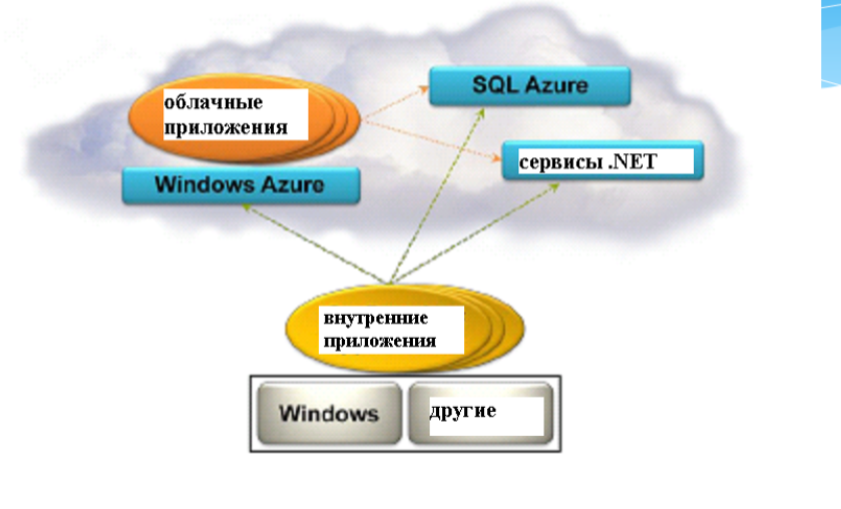

Название лекции
Разработка динамичесих веб приложений
Гладкий Максим Валерьевич / github:MaksHladki
Содержание лекции
Архитектура Windows Azure
Эволюция Windows Azure
- 2006 - создана «команда мечты» для разработки облачной ОС RedDog
- 2006 - команда Indigo (известная как Windows Communication Foundation) приступает к работе над экспериментальным реле коммуникации
- 2006 - команда SQL берет на себя разработку интернет-версии своей службы
- 2007 - три команды начинают сотрудничать друг с другом
- 2008 - объединение команд в проект Azure: службы .NET, онлайн-службы, службы SQL. Предствлена Azure CTP
Следующий этап эволюции
- 2009 - выходит версия CTP 3, подержка доверенного и платформенного кода, геолокация, fast CGI, PHP и Java SDK. Azure становится открытой платформой, выпускается первый официальный SDK 1.0
- 2010 - платформа доступка в 21 стране, реализована поддержка БД более 50 ГБ, полноценная поддержка IIS и службы удаленного рабочего стола
- 2011 - инструмент SQL Azure Reporting, Scheduler SDK для поддержки ресурсоемких параллельных приложений
- 2012 - добавлена архитектура IaaS, выпущен Python SDK. ЦОДы работают в 8 регионах мира
- 2013 - добавлена служба Active Directory
Windows Azure
Windows Azure — это открытая и гибкая облачная платформа, позволяющая бы- стро создавать, развертывать и управлять приложениями в глобальной сети центров обработки данных под управлением Майкрософт. Приложения можно разрабатывать с помощью любого языка, инструмента или платформы. Кроме того, приложения в общедоступном облаке можно интегрировать с имеющейся ИТ-средой.
Основные особенности
- Открытая - поддерживаются многие ЯП и интсрументы
- Гибкая - разнообразие облачных служб (от утилит развертывания до SQL-хранилищ)
- Под управлением Майкрософт - ЦОДы в США, Европе и Азии
- Совместимая - многие компоненты легко интегрирутся с Windows Server
- Собственная сеть CDN
Основные возмоности
- Инфраструктура
- Мобильные приложения
- Интернет
- Медиаконтент
- Интеграция
- Идентификация и управление доступом
- Большие данные
- Разработка и тестирование
- Хранение, архивация и восстановление
- Управление данными
Три ОС в одной концепции
- Windows Server - платформа корпоративного уровня, фундаметр облачных вычислений
- System Center - интегрированная платформа для централизованного управления частными, размещенными и общедоступными облаками
- Windows Azure — открытая, гибкая облачная платформа для разработки, развертывания и управления приложениями и задачами, размещенными в глобальной сети центров обработки данных Майкрософ
Вычислительные службы Windows Azure
Типы приложений
С точки зрения пользователей
- Внутренние (on-premises app) - выполняются на компьютере пользователя
- Облачные - выполняются в среде Windows Azure в ЦОД
Службы Windows Azure
- Вычислительные службы - предоставляют компьютерные ресурсы, на которых работают облачные приложения
- Сетевые службы - предоставляют облачные приложения и центрам обработки данных пользователям различными способами
- Службы обработки данных - способы хранения, управления, защиты и анализа бизнес-данные,составление отчетов по ним
- Службы приложений - улучшают производительность, защиту и уровень интеграции облачных приложений, а также делают более простым процесс их освоения
Вычислительные службы
| Виртуальные машины | универсальная среда для создания, развертывания и управления виртуальными машинами |
| Веб-сайты | специализированная среда для создания и управления веб-сайтами, а также переноса существующих |
| Облачные службы | создание и развертывание масшатабируемое ПО любой сложности на любом ЯП |
| Мобильные службы | технологии обработки и хранения данных для мобильных систем |
Сетевые службы
| Виртуальная сеть | позволяет использовать облако в качестве расширения локального ЦОДа |
| Диспетчер трафика | масшатбирование трафика по определнным критериям: максимальная производительность, циклическое обслуживание и уровень отказоустойчивости |
Службы обработки данных
| Управление данными | хранение и управление данными в ВМ + MSQL, БД Azure SQL, NoSQL решениях через REST API, blob-хранилищах |
| Бизнес-аналитика | предоставляет службы SQL Server Reporting and Analysis, SharePoint Serve, Azure SQL Reporting, Azure Marketplace и HDInsight |
| HDInsight | специальная надстройка, позволяющая запускать Apache Hadoop в облаке Azure |
Службы обработки данных
| Кэш | распределенные решение для кэширования, ускоряющее работу облачных приложений и снижающее нагрузку на БД |
| Резервное копирование | средства автономной защититы данных на сервере, позволяют создавать как автоматические, так и ручные копии |
| Диспетчер восстановления | защита критически важных для бизнеса данных, приложений и служб в платформе виртуализации Hyper-V. Координация репликаций и восстановление частных облаков |
Службы приложений
| Мультимедийные службы | формируют процессы для создания, управления и распространения медиаконтента |
| Обмен сообщениями | шина обслуживания и очередь обеспечивают связь приложений в частном и/или общедоступном облаке |
| Узлы уведомлений | хорошо масштабируемая кросс-платформенная инфраструктура push-уведомлений для приложений, работающих на мобильных устройствах |
Службы приложений
| Службы BizTalk | функции B2B (Business-to-Business) и EAI (Enterprise Application Integration) для облачных и гибридных решений по интеграции |
| Active Directory | отвечает за управление идентификацией и контроль доступа для облачных приложений |
| Многофакторная аутентификация | дополнительный уровень аутентификации наряду с учетными данными пользователей, повышая защищенность доступа к локальным и облачным приложениям |
Общая схема

Веб-сайты
Определение от Microsoft
Веб-сайты Windows Azure — это масштабируемая, безопасная и гибкая плат- форма, на основе которой можно создавать веб-приложения для бизнеса, рас- ширять охват бренда и привлекать новых клиентов
Особенности
- портал самообслуживания с галереей наиболее популярных веб-решений
- интсрумент WebMatrix
- интсрумент публикации приложений
- Azure SDK для Visual Studio
- утилиты для создания, конфигурирования и управления БД
- интеграция с системами контроля версий: TFS, GitHub, Bitbucket и т.д.
- инструмент мониторинга нагрузки и состояния ресурсов веб-приложения
- утилиты диагностики и тесторования
- конфигурация SSL-стерификатоф
- конфигурация версии платформы (.NET, PHP, Java и т.д)
Режимы работы веб-сайтов
- бесплатный - мультиарендная архитектура, каждому сайту выделена квота на ресурсы процессора, памяти и сети. Количество сайтов зависит от тарифного плана, SLA отсутствует
- распределенный - гарантируется SLA более низкого уровня по сравнению со стандартным режимом
- стандартный - можно выбрать сайты, которые будут работать на спе- циально выделенной виртуальной машине, где могут размещаться до 500 веб- сайтов
Доступность серверов
- малый сервер (1 ядро, 1,75 ГБ оперативной памяти)
- средний сервер (2 ядра, 3,5 ГБ оперативной памяти)
- большой сервер (4 ядра, 7 ГБ оперативной памяти)
автомасштабирование

https://msdn.microsoft.com/ru-ru/library/hh680945(v=pandp.50).aspx
Балансировка нагрузки
https://docs.microsoft.com/ru-ru/azure/application-gateway/application-gateway-introduction
Виртуальные машины
Определение от microsoft
Виртуальные машины Windows Azure — это масштабируемая IaaS-платформа по запросу, позволяющая быстро подготавливать и развертывать в облаке сервер- ные задачи.
Особенности
- механизмы настройки, контроля и отслеживания ВМ
- балансировщик нагрузки между ВМ
- интсрумент подключения к другим облачным службам Windows Azure, на которых работают веб-роли и рабочие роли
- можно копировть виртуальные жесткие диски (Virtual Hard Disk, VHD) из локальной среды в Azure и на их основе создать новые виртуальные машины
- Возможно и обратное действие — выгрузить VHD из Windows Azure и запустить их локально в центре обработки данных
- Новые виртуальные машины можно создавать из стандартных образов, доступ- ных в галерее Windows Azure. В число стандартных образов входят актуальные версии Windows Server, различные сборки Linux, а также Microsoft SharePoint, Microsoft SQL Server и предустановленный Microsoft BizTalk Server в составе Windows Server
- вы можете использовать для развертывания новых виртуальных машин и собственные сборки, которые были созданы локально
Особенности
- будет полный контроль над своими виртуальными машинами, развернутыми в облаке Windows Azure.
- Виртуальными машинами на базе Windows Server можно удаленно управлять по протоколу RDP (Remote Desktop Protocol)
- управлять средствами Windows PowerShell
- Виртуальные машины Linux поддерживают удаленное управление по SSH (Secure Shell)
- Вы также мо- жете создавать и подключать к виртуальным машинам диски для хранения ин- формации приложений
- Если необходимо повысить производительность виртуальных машин для ресурсоемких задач, можно выделить дополнительные процессорные ядра
- со- храняются и самостоятельно восстанавливаются после аппаратных сбоев
- Любые подключенные к вирту- альной машине диски также сохраняются, они резервированы BLOB-объектами хранилища Windows Azure. Между тем, экземпляры веб-ролей и рабочих ролей самовосстанавливаются, но не сохраняются
- Использование виртуальных машин тарифицируется по часам, поэтому для эко- номии средств вы можете просто отключить ненужные машины.
Основные компоненты
- Fabric - интерфей - обеспечивает средства управления облачной платформой
- Compute - вычисления, обрабатывает пользовательские данные
- Storage - память, сервис хранения пользовательских данных
- Config - конфигурация
Все компоненты являются сервисами .NET
Сервис Compute
- Решает задачи совместного выполнения огромного числа пользовательских приложений
- Может выполнять каждый экземпляр приложения на отдельной виртуальной машине
- Основная проблема - масштабирование
Облачные службы
С помощью облачных служб Windows Azure можно быстро создавать, развер- тывать многоуровневые приложения в облаке и управлять ими. Используя облачные службы, вы можете сконцентрироваться на разработке, те- стировании, развертывании и управлении приложением, а не тратить время на обслуживание нижележащей инфраструктуры
Особенности
- Для распреде- ленной обработки и гибкого масштабирования приложения можно назначить ему несколько ролей
- Приложения облачных служб можно создать практически на любой популярной платформе разработки, включая .NET, Node.js, PHP, Java, Python и Ruby.
- Кроме того, в облачное приложение можно интегрировать мо- бильные службы Windows Azure и мультимедийные службы.
- На портале управления Windows Azure можно отслеживать работоспособность и доступность приложений в облачных службах
- Можно также настроить оповеще- ния в реальном времени о сбоях в работе служб или снижении их производитель- ности
- А с помощью новой функции автомасштабирования ваше приложение бу- дет автоматически получать или отдавать ресурсы по мере необходимости. Это удешевит обслуживание приложений в облаке, так как оплата будет взиматься только за фактически использованные ресурсы
Сетевые службы Windows Azure
Free account

Схема работы пользователя
Спасибо за внимание